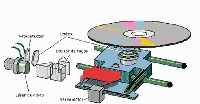

¿Cómo hace el dispositivo para hacer su función?
Para lograr leer la información, estos dispositivos se basan en la propiedad de la reflexión de un haz de luz láser. Según la luz láser se reflecte de uno u otro modo, el lector podrá determinar si la información leída en cada instante corresponde a los enteros unos y ceros.

Mientras que en un CD la frecuencia es fija y se sitúa en el espectro de luz infrarrojo, no es fijo y debe variar su frecuencia para poder acceder a las diferentes caras y capas. Además, las frecuencias de láser que maneja un DVD son mucho más baja(635-650 nanómetros en contraste con los 780nm de un CD-ROM(Memoria sOlo de lectuRa)) y por lo tanto permite mucha más precisión a la hora de leer los datos.
Esto es la razón esencial para lo cual un lector de CD-ROM habitual no puede acceder a la información almacenada en un DVD. Otras de las ventajas del DVD consisten en aprovechar al máximo las posibilidades de almacenamiento de un disco compacto. En un CD normal encontramos las dos caras como de costumbre, pero solo una de ellas esta destinada almacenar información. La otra solo se emplea para identificar el CD gracias a una etiqueta adhesiva adherida al mismo por diversos métodos.
En un DVD es posible aprovechar las dos caras del disco y aun hay más. En cada uno de ellos existen las llamadas capas. Por cara, a las que es posible acceder mediante la variación del haz de láser para que la reflexión se produzca en la capa de la cara indicada. Por debajo de la laca protectora en la superficie del disco existen dos capas internas sobre la cual se pueden almacenar información, una de ellas semitransparente.
Ambas se encuentran separadas lo justo para que la luz láser sea capaz de incidir en ambas indistintamente. Esta tecnología permite incluso duplicar la cantidad de almacenamiento de un DVD convencional de una cara y una capa, llegando, con el DVD de dos caras y dos capas por cara hasta la nada despreciable cifra de 17 GB, lo mismo que podría almacenar 26 CDs convencionales.